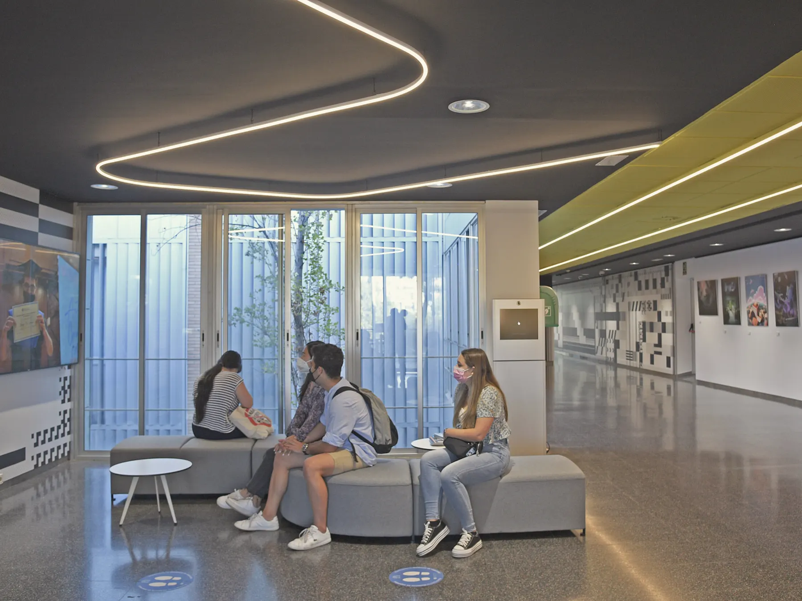
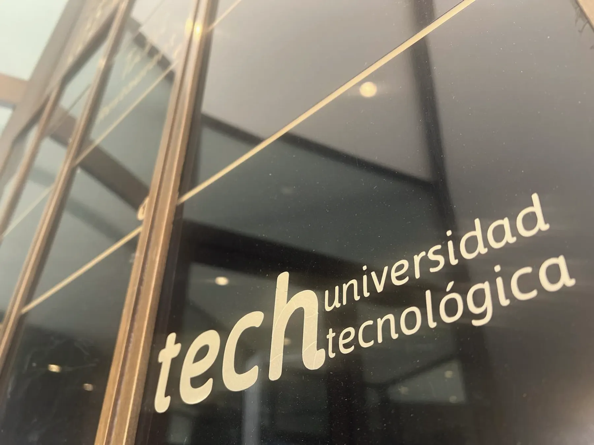
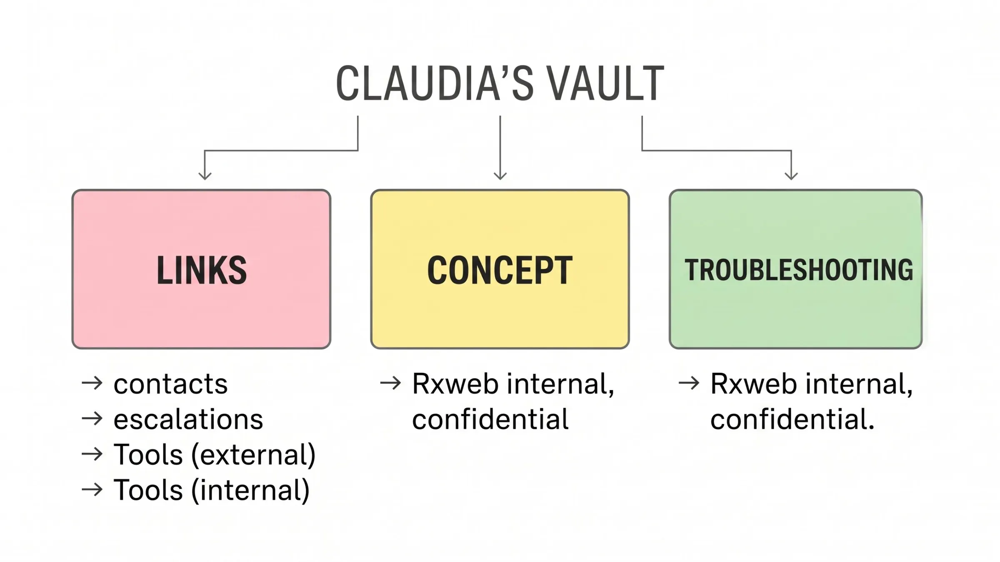

Breaking down complex systems
Two accreditation audits taught me to question systems I didn't build myself, how to write down how they're actually working, and how to properly justify assumptions I make based on instinct.
- Role
- Student panel member
- Timeline
- Oct 2025 to Oct 2026
- Where
- AQU Catalunya, AQUA Andorra
ResultsBoth degrees have been approved, with my inputs written into the final reports.
Independent agencies like AQU Catalunya and AQUA are the backbone of educational quality assurance. On both panels, I held the student seat, where I brought years of being the voice for my classmates as student representative.

AQU Catalunya
Oct 2025 to Apr 2026This was a re-accreditation process at CITM, Universitat Politècnica de Catalunya. I read the last evaluation and the university's response, wrote down my assumptions, and tested them in interviews with management, faculty workers, teachers, students and alumni.
The students told a different story from the paperwork: software licences they didn't have, workload peaks that lined up with dropout timings, and an isolated group on a different location with fewer resources than was initially described.
If I were to do it again, I'd be more critical, and speak to people who'd lived similar experiences for the areas I was less familiar with.

AQUA Andorra
Apr 2026 to Oct 2026A new online bachelor's in videogame design and development, proposed by TECH Global University. As an ex-ante evaluation, the 400-page proposal was the only evidence to work with, so I printed it and read it in three passes.
First, I wrote my initial reactions and assumptions, which gave me points to start working on. Then I checked the institution's claims against their website, pre-existing programmes, and real-world data. Finally, I questioned the sections where nothing particular stood out against standard practice, to make sure I had everything in check.
The key finding from me was that the proposal called its online model inclusive, but its software requirements demanded a powerful computer from every student.
Current work
2026, ongoingAt my current company, we're working on improving onboarding procedures and both existing and new documentation systems. I started a local Obsidian vault to allow myself to make sense of a very complex pharmacy software system. Now, it's shaping into a documentation tool that allows me to quickly answer questions from the team, and keep track of niche issues to troubleshoot that some senior members had never worked on before.
With support from my manager, I took some time during quiet work periods to shape my vault into a proper infrastructure.

How I work
- Test assumptions before building anything.
- Ask questions, talk to the people closest to the work.
- Write it down properly for the next person that comes along.